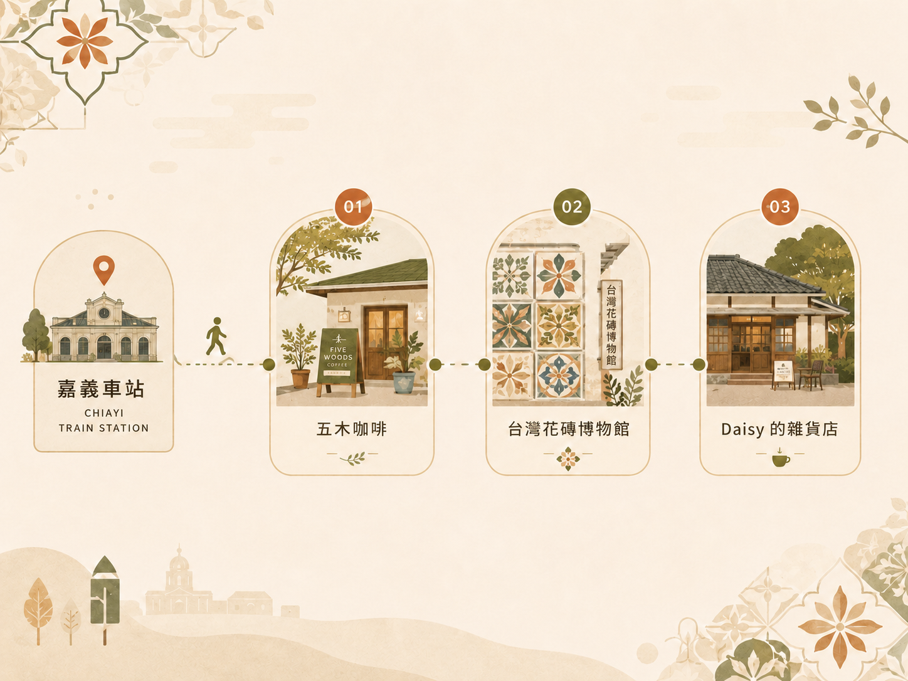

SEO／GEO CONTENT CASE STUDY
嘉義咖啡內容企劃
以「嘉義咖啡廳」與「嘉義火車站咖啡廳」為核心，針對第一次到嘉義、只有半日時間的旅客，從 SERP 缺口、選點邏輯與地方搜尋情境出發，完成關鍵字策略、內容架構、文章撰寫、結構化資料與 CTA 規劃。

案例概覽
Primary Keyword
嘉義咖啡廳
Geographic Long-tail
嘉義火車站咖啡廳
Target Audience
第一次到嘉義、只有半日時間的旅客
Search Intent
尋找咖啡廳＋安排半日行程
Content Format
嘉義咖啡半日路線
My Role
關鍵字研究、SERP 分析、內容策略、文案撰寫、技術 SEO
Status
Independent Portfolio Case Study
本案為個人獨立完成之 SEO／GEO 作品集案例，未宣稱實際排名、流量或索引成果。
Search Problem
使用者真正缺少什麼？
搜尋「嘉義咖啡廳」時，常見內容多為大量店家清單；搜尋「嘉義火車站咖啡廳」時，也多集中在單店介紹或車站周邊推薦。這些內容能提供選項，卻不一定能回答半日旅客該從哪裡開始、如何銜接，以及時間不足時要刪掉哪一站。
Content Response
如何回應搜尋缺口？
路線決策
不再增加店家數量，而是設定咖啡、地方文化與老屋空間三種不同功能。
情境調整
除了完整下午路線，也提供兩小時與雨天走法，協助讀者依時間與天候調整。
地方搜尋
使用嘉義火車站作為明確起點，並在店家卡片提供導航、官方資訊與核對日期。
Technical Delivery
網站實作內容
- Semantic HTML
- BlogPosting JSON-LD
- BreadcrumbList JSON-LD
- Canonical 與 Open Graph
- robots.txt 與 sitemap.xml
- CTA event naming
- Responsive design